Tileset Editor Documentation
How does it works?
Tileset Editor is open source and made with Python 3, it uses Tkinter as framework,
and PIL and
opencv for
image
manipulating.
What are features?
With Tileset Editor, you can compile multiples images in one spritesheet, rip an entire tileset,
or event some parts of it with a lot of precision.
Jump to:
Tiles compiling
Tileset Ripping
Options for tileset compiling
Options for tileset ripping
Changelog
__________ Tiles compiling __________
When you are in Tileset Editor, you can choose multiple tiles to compile in one tileset/spritesheet,
(call it whatever you want), so to do then, click the "Upload images" buttons in the upper
part of
the window as below:
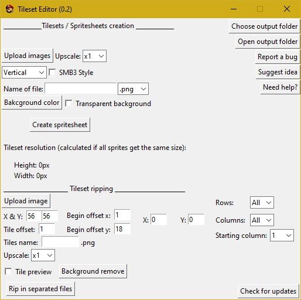
Here are below the sprites I want to compile, it's an animation made on blender
that tries to recreate pre rendered graphics like in Donkey Kong Country.
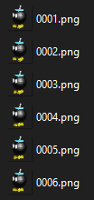
Now they're loaded in the software, select the options and the name you want, you can reffer to the
options
for see what option stands for. Now I selected my options I just click on "Create spritesheet"
button
and there, if you have no error message, it means you done everything correctly and than your
tileset
has been generated without errors. You can go see it by pressing "Open output folder button" or just
by
going in the output folder that you choosen by yourself.
So here is the result:

__________ Options for tileset compiling __________
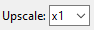
Upscale: basically, if you select x2, the resolution of the output will be 2 times bigger,
and
that's the same thing for all other sizes
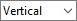
Direction: If you want your sprites compiled vertically of horizontally
Vertical:
Horizontal:
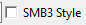
SMB3 Style: if enabled, it will compile the spritesheet in two parts, an normal part,
and an horizontally reversed part (used in SMBX for NPCs that looks both sides)
Example:
SMB3 style isn't enabled:

SMB3 style is enabled:
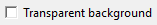
Transparent background: render the tileset with a transparent background
(it only works if the tiles already have a transparent background!)
Example:
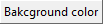
Background color: render the tileset with a choosen color background
Example:
__________ Tileset Ripping __________
Tileset editor most important part is the tileset ripping, which consists in ripping all tiles in a
tileset
with a lot of precision thanks to a lot of customisation in the auto ripping.
Let me show you an example:
Below, I have a Super Mario World tileset created by
supernesfreak, that you can
download
here.
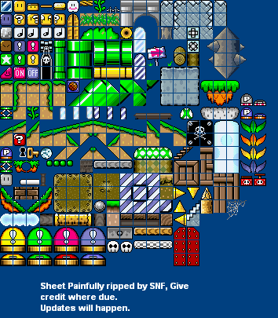
Now we downloaded this tileset, load it in the software by clicking the "Upload image" button in the
lower part of the window.
(You can choose an output folder by clicking the "Choose output
folder" button at top right)
Now it's done, make sure to enable the "Tile preview" option, so you can edit the tiles size
correctly,
in my case, the tiles are 16x16 so in the "X & Y" cases, I put 16 and 16.
As you can see above, each tiles are separed by 1 pixel, so I put 1 in "Tile offset"
So now, it looks like this:
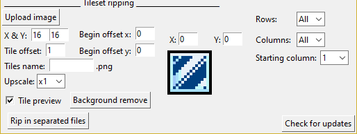
By modifying the X and the Y value above the tile, I can verify if the offset is set correctly.
Now I want to remove the dark blue background of tiles so I just click on the "Background remove"
button,
and it opens me this window:
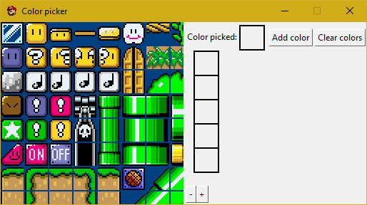
Now with my cursor, I pick the color I want to remove and once I selected it, it should appear in
the
"Color picked" case, if it's the good color, press the "Add color" button and it will add it to the
colors list.
If you want to zoom, just press the "+" or the "-" button for select colors with
precision.
(Note: you can't add more than 5 colors!)
Now I picked my colors it should looks like this:
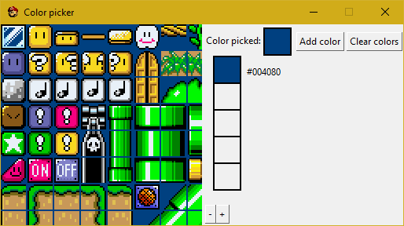
If I'm satisfied with this, I can quit this window, select the name I want for my tiles next to the
"Tiles name" options (if it's left empty all tiles will be named tile-(the number of the tile))
and press the "Rip in separed tiles" button. During the auto ripping process, the empty tiles
will automatically be deleted so your output folder isn't full of transparent tiles.
If no error has occured, a pop-up like this one below should open:
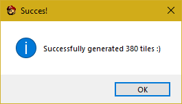
(Note: every 200 tiles, you get a pop-up that asks you if you want to continue ripping, for prevent
flood.)
Now let's open the output folder and look at our tiles.
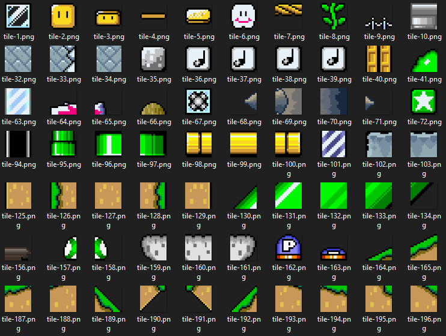
As you can see, all tiles were correctly ripped and the dark blue background has been removed.
__________ Options for tileset ripping __________
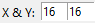
X & Y: Is for defines tile size.
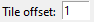
Tile offset: space betwen tiles.
Begin offset x: space between the left of the image and x position of the first
tile.
Begin offset y: space between the top of the image and y position of the first tile.
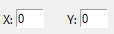
X and Y: Modify to navigate trough tiles so you can adjust offsets.
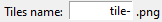
Tiles name: tiles name at output, tiles are named with this name and the number of the tile.
(Note: if this option is left blank, your tiles will automatically get "tile-" as name)
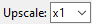
Upscale: the resolution will be multiplied by the upscale factor when the tile is being ripped.
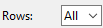
Rows: number of rows ripped before the process stops, if "Rows" is set to "All", all rows will be
ripped
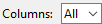
Columns: number of columns ripped before the process go to the row below, if if "Columns" is
set to "All", all columns will be ripped.
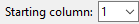
Starting column: defines the columns where the process will start to rip, it acts a bit like
the "Begin offset x" option, but you don't have to calculate all the offsets.
__________ Changelog __________
0.1
Added all main features, such as: Tileset compiling, upscaling and
top right buttons
0.11
Added SMB3 Style, color background, transparent background.
0.2
Added Tileset Ripping with, preview, size, offset, tile name, begin
offset x, begin offset y,
x position in preview, y position in preview, upscaling, number of
rows,
columns and starting column, and background removing.